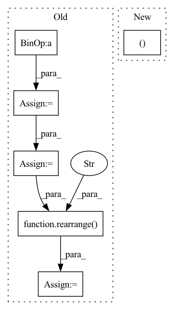

Pattern ID :389
Before Change
avg_target = target.mean(dim=3)
bin_size = self.max_pixel_val / self.output_channel_bits
channel_bins = torch.arange(bin_size, self.max_pixel_val, bin_size).to(avg_target.device)
discretized_target = torch.bucketize(avg_target, channel_bins)
discretized_target = F.one_hot(discretized_target,
self.output_channel_bits)
c, bi = self.channels, self.output_channel_bits
discretized_target = rearrange( discretized_target,
"b n c bi -> b n (c bi)" ,
c=c,
bi=bi)
bin_mask = 2**torch.arange(c * bi - 1, -1,
-1).to(discretized_target.device,
discretized_target.dtype)
target_label = torch.sum(bin_mask * discretized_target, -1)
predicted_patches = predicted_patches[mask]
target_label = target_label[mask]
loss = F.cross_entropy(predicted_patches, target_label)
return loss
After Change
self.std = torch.tensor(std).view(-1, 1, 1) if std else None
def forward(self, predicted_patches, target, mask):
p, c, mpv, bits, device = self.patch_size, self.channels, self.max_pixel_val, self.output_channel_bits, target.device
bin_size = mpv / (2 ** bits)
// un-normalize inputIn pattern: SUPERPATTERN
Frequency: 3
Non-data size: 6
Instances Fragment ID: 1503541
Project Name: lucidrains/vit-pytorch
Commit Name: 64a2ef6462bde61db4dd8f0887ee71192b273692
Time: 2021-06-16
Author: lucidrains@gmail.com
File Name: vit_pytorch/mpp.py
M Class Name: MPPLoss
N Class Name: MPPLoss
M Method Name: forward(4)
N Method Name: forward(4)
M Parent Class: nn.Module
N Parent Class: nn.Module
M File Name: vit_pytorch/mpp.py
N File Name: vit_pytorch/mpp.py
M Start Line: 53
M End Line: 82
N Start Line: 53
N End Line: 72
Before Change
q = q.softmax(dim = -1)
k = k.softmax(dim = -2)
q = q * self.scale
if exists(mask):
v.masked_fill_(~mask, 0.)
context = einsum("b h n d, b h n e -> b h d e", k, v)
out = einsum("b h d e, b h n d -> b h n e", context, q)
out = rearrange( out, "b h n d -> b n (h d)" )
return self.to_out(out), 0
class EquivariantAttention(nn.Module):
def __init__(After Change
def forward(self, x, queries, mask = None):
induced = self.attn1(queries, x, mask = mask)
out = self.attn2(x, induced)
return out, 0
class EquivariantAttention(nn.Module):
def __init__(
self, Fragment ID: 1503573
Project Name: lucidrains/en-transformer
Commit Name: 6bd1817d780502d24a2515e850c9cd1600f24642
Time: 2021-06-04
Author: lucidrains@gmail.com
File Name: en_transformer/en_transformer.py
M Class Name: GlobalLinearAttention
N Class Name: GlobalLinearAttention
M Method Name: forward(4)
N Method Name: forward(4)
M Parent Class: nn.Module
N Parent Class: nn.Module
M File Name: en_transformer/en_transformer.py
N File Name: en_transformer/en_transformer.py
M Start Line: 132
M End Line: 151
N Start Line: 160
N End Line: 162
Before Change
q = torch.nn.functional.normalize(q, dim=-1)
k = torch.nn.functional.normalize(k, dim=-1)
attn = (q @ k.transpose(-2, -1)) * self.temperature
attn = attn.softmax(dim=-1)
out = (attn @ v)
out = rearrange( out, "b head c (h w) -> b (head c) h w" , head=self.num_heads, h=h, w=w)
out = self.project_out(out)
return out
After Change
q = q.view(b, c, -1).view(b, self.num_heads, -1, h * w)
k = k.view(b, c, -1).view(b, self.num_heads, -1, h * w)
v = v.view(b, c, -1).view(b, self.num_heads, -1, h * w)
q, k = F.normalize(q, dim=-1), F.normalize(k, dim=-1)
attn = torch.softmax(torch.matmul(q, k.transpose(-2, -1)) * self.temperature, dim=-1)
out = self.project_out(torch.matmul(attn, v).view(b, -1, h * w).view(b, -1, h, w))
return out Fragment ID: 1503546
Project Name: leftthomas/restormer
Commit Name: b68437812320f378e8cfaa3c4fc1f59342dda9b0
Time: 2022-02-26
Author: leftthomas@qq.com
File Name: model.py
M Class Name: Attention
N Class Name: MDTA
M Method Name: forward(2)
N Method Name: forward(2)
M Parent Class: nn.Module
N Parent Class: nn.Module
M File Name: model.py
N File Name: model.py
M Start Line: 105
M End Line: 122
N Start Line: 18
N End Line: 26